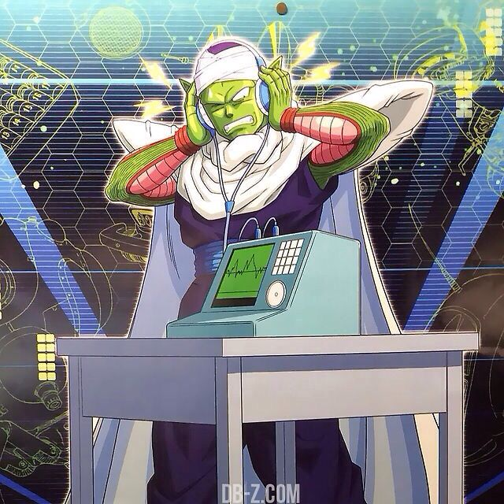
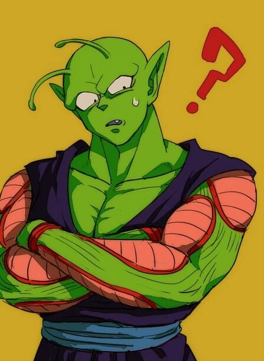

Kyla's Homepage


Piccolo's wife (REAL)
hello. I am Piccolo's wife. aka Kyla! aka kylamansi, piccolopilled, valkyrie, ghoulsoup, soulgoop, etc. I use they/he pronouns, and I am currently a junior transfer AGPM student at UC Santa Cruz -w-
here are some things I like:
- fluffy cakes
- cute trinkets
- stickers
- anything mango
- anime figures (I've got 11 so far hehe)
- gyaru fashion and makeup fav substyles are tsuyome, rokku, and ishoku hada!!
- big clunky jewelry
- Catholic motifs (as an aesthetic i'm not actually devout)
- Filipino food
- horror
Favorites ^.^
fav artists/bands:
- The Cure
- Eraserheads
- Machine Girl
- Fiona Apple
- Cocteau Twins
- Ecco2k
- Jodeci
- Dance Gavin Dance
- Megan Thee Stallion
- BUCK-TICK
- Chungha
- Alex G
- My Chemical Romance
- Sickboyrari
- Your Arms Are My Cocoon
- Tubero
fav shows/franchises:
- Dragon Ball (obviously)
- Yellowjackets
- My Little Pony
- Kill la Kill
- Beastars
- Love Live
- BoJack Horseman
- JoJo's Bizarre Adventure
- Arcane
- Durarara!!
fav video games/franchises:
- Fallout
- Pokemon Emerald
- VA-11 Hall-A Cyberpunk Bartender
- Tomodachi Life
- Yakuza
- Transformice
- Animal Jam
- League of Legends
- Terraria
fav movies:
- Sweeney Todd: The Demon Barber of Fleet Street
- Coraline
- Hellbound: Hellraiser II
- Dragon Ball Super: Super Hero
- The Secret World of Arrietty